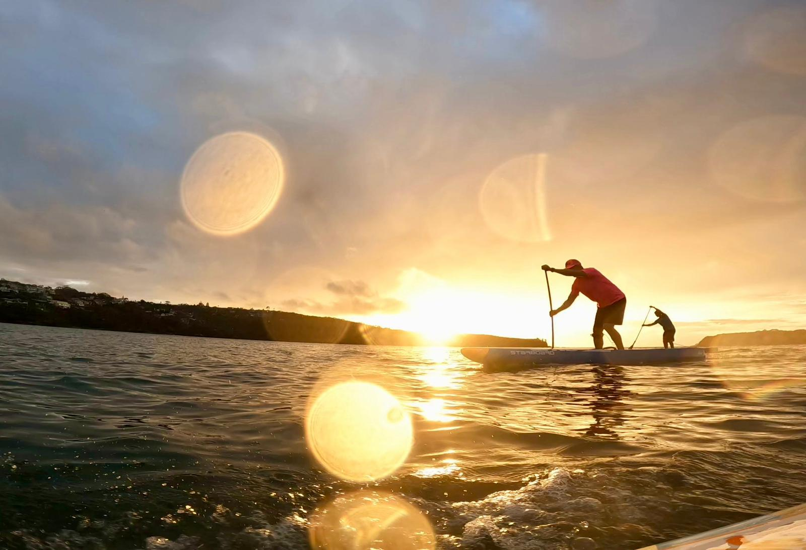
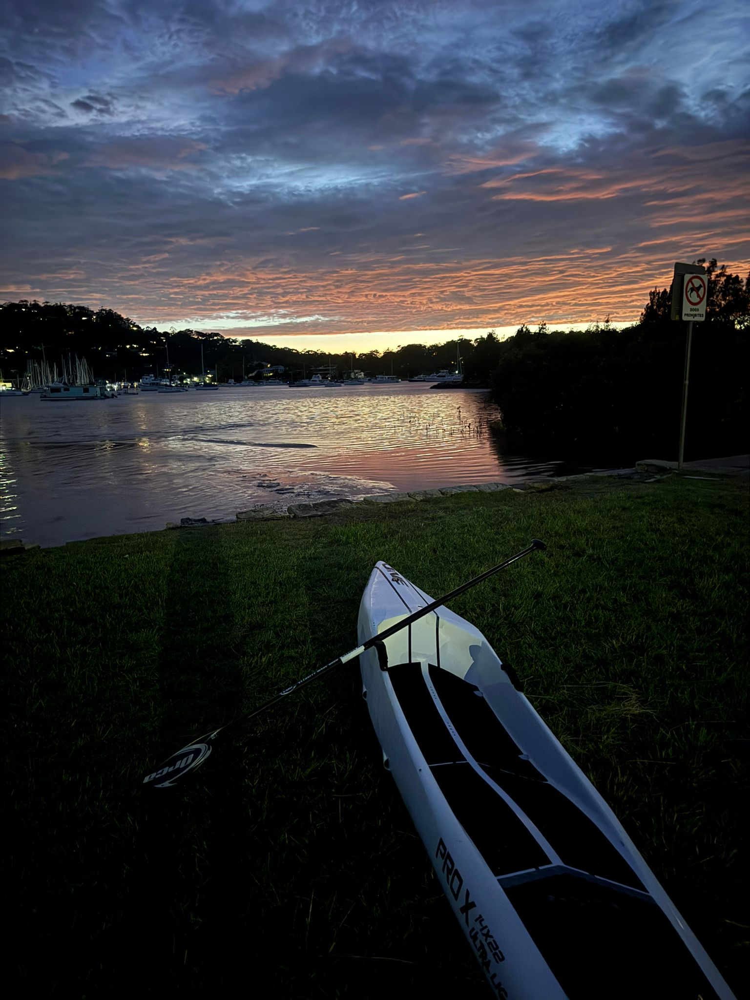
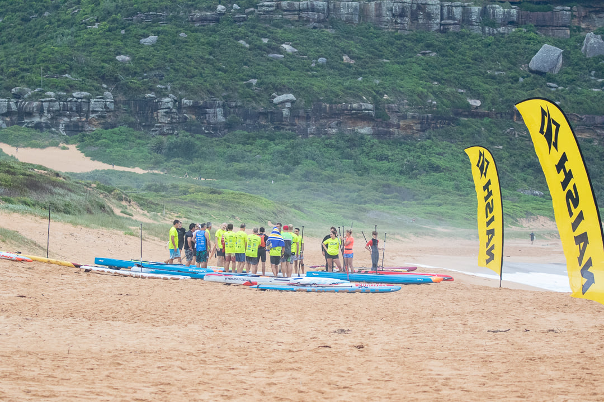
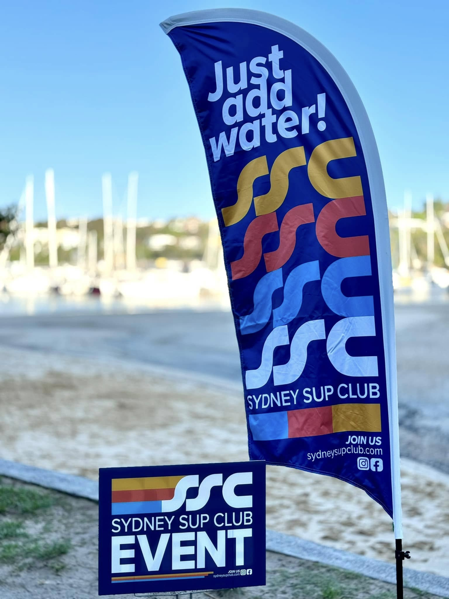
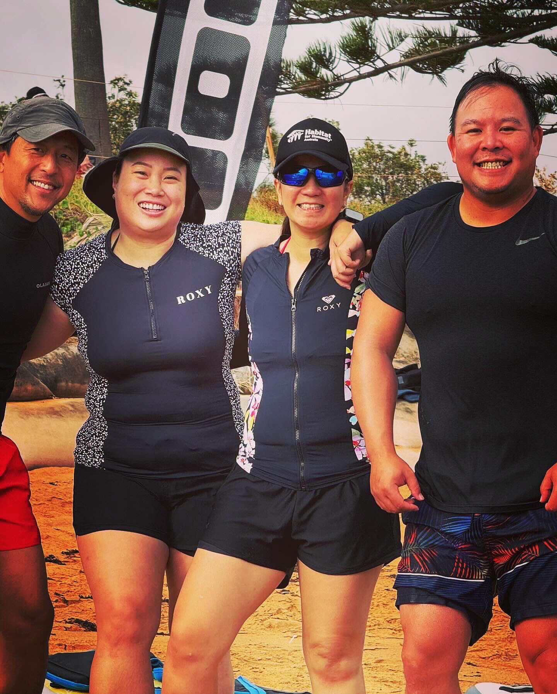
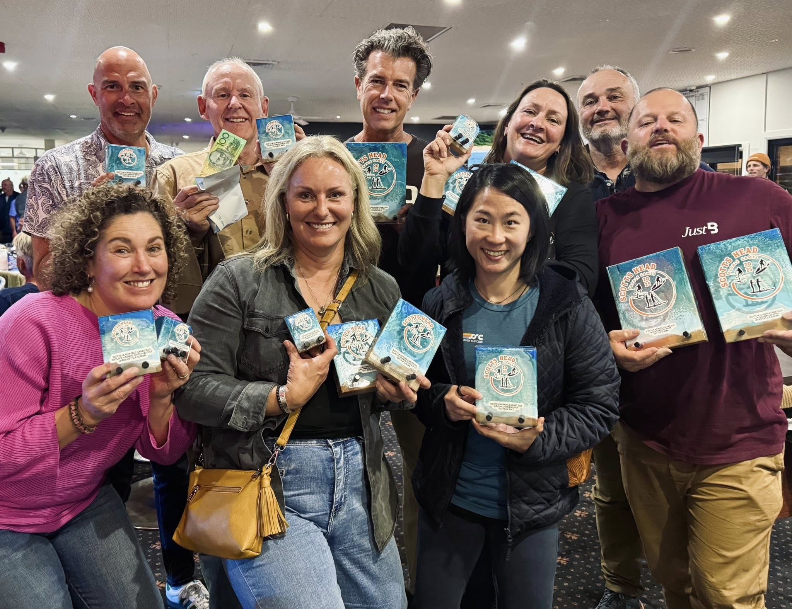

Sydney SUP Club (SSC)
We're a bunch of paddlers who love being on the water. Whether you're picking up a board for the first time or chasing race times, SSC is here to help you learn, improve, and hang with people who get the stoke. No pressure, no gatekeeping—just good vibes and good paddling.
What We Offer
Why SSC?
It's simple: paddling is more fun with people. Whether you're after a good workout, a racing buddy, or just someone to chat with about boards and conditions, SSC has your back.
Gallery






Events, Trainings and meetups
Sydney SUP Club: Events & Training
You can join us to train hard, relax on the water, or something in between. Here's what we've got going on.
Training Sessions
Want to get faster or work on your technique? We run sessions throughout the week for that. Mix it up with different focuses each day.
- Tuesday Mornings: Speed intervals and technique
- Thursday Mornings: Longer distances
- Saturday Mornings: Racing practice
Times and spots vary based on conditions—we post updates in the WhatsApp group.
Sunday Sessions at Narrabeen Lake
Every Sunday morning you'll find us at Narrabeen Lake. It's a great spot and it's become our thing. Chat about boards, share tips, or just paddle together. Easy going—everyone's welcome.
- When: Every Sunday morning
- Where: Lake Narrabeen
- Who: Total mix—racers, social paddlers, beginners, everyone
Racing
If you're into racing, there's a whole calendar of events happening. We get involved in the Paddle NSW circuit and help members get ready for races. Range from local club races to state events.
Check the NSW Paddle events page for what's coming up.
Become a Club Member
Sydney SUP Club: Join Our Community
We're working with Paddle NSW to get our membership sorted. It'll be ready soon. In the meantime, the easiest way to get in touch and stay in the loop is to join the WhatsApp group.
Meet the crew
Want to know what's happening? Hit us up on WhatsApp, Facebook, or Instagram. That's where we post updates, share photos, and organize last-minute sessions when conditions are good.
Follow us on Facebook
Get the latest news, event announcements, and community highlights on our Official Facebook Page.
Join the Inner Circle (WhatsApp)
Want to meet the crew or find a training partner for a mid-week session? Jump into our WhatsApp Group to chat with the community directly.